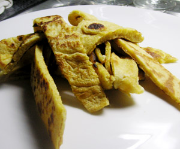

Krazete
4 von 64 Eier trennen. Aus 250 g Mehl, 2.5 Dl Milch und Eigelb unter Zugabe von Salz einen glatten Teig rühren. Das Eiweiß zu steifem Schnee schlagen und unter den Teig heben. 25 g Butter in einer Pfanne schmelzen und ebenfalls vorsichtig unter den Teig mischen. Sie darf nur gerade geschmolzen sein. In einer Bratpfanne etwas Butterschmalz erhitzen, nur eben so viel, daß der Boden dünn bedeckt ist. Den Teig wie beim Pfannkuchenbacken schöpflöffelweise in die Pfanne geben und ausbacken, bis er hellbraun ist. Dann umdrehen und mit Hilfe einer Gabel und der Bratschaufel zerreißen (daher der Name Kratzete), bis die Stücke 2 - 3 cm groß sind; goldgelb ausbacken.
